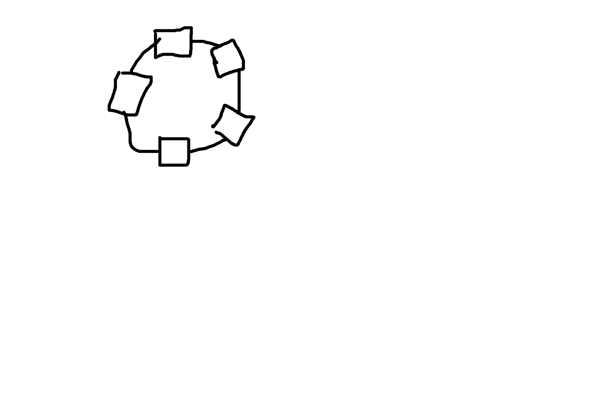
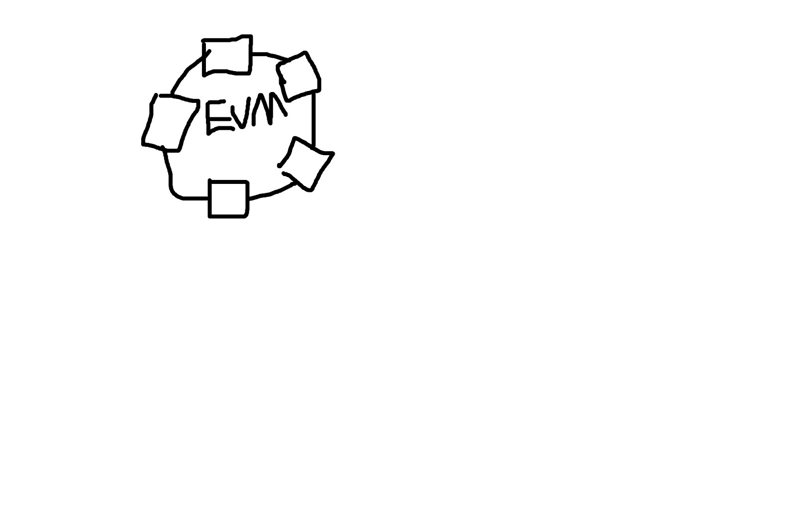
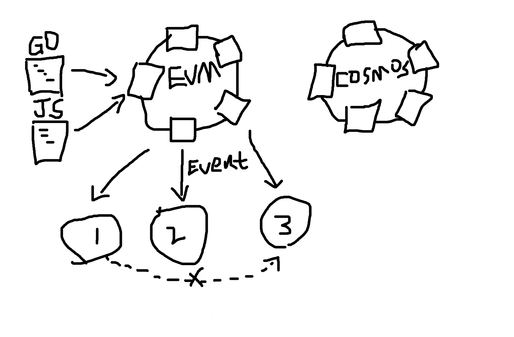
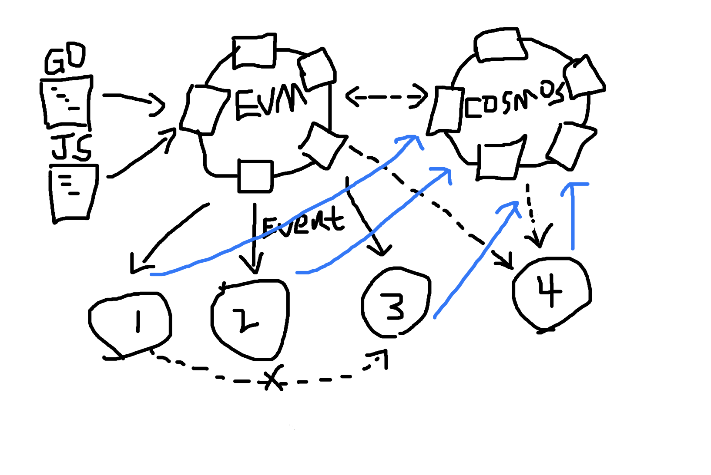

Understanding the Technical Architecture of Any Blockchain Project
Basic Structure
The most basic blockchain is just a blockchain itself, with the capability of consensus-based block production. It may have many nodes or only one node, and each node provides an RPC interface for receiving transactions:
With the advent of Ethereum, blockchain transactions are not only transactions but also have the ability to execute smart contracts:
There will always be an external program to interact with smart contracts, which initiates transactions:
From this point, it’s important to clarify two types of actions:
- Any interaction with the blockchain, whether submitting or querying transactions, is considered on-chain interaction.
- Any action without interaction with the blockchain is considered off-chain behavior.
Initiating interaction with a smart contract is always considered on-chain interaction. Similarly, no matter what language the external program initiating the transaction is written in, whether it’s Javascript or Golang, it’s called the smart contract SDK:

In addition to Ethereum’s EVM contracts, there may also be contracts from other virtual machines (SVM, WASM), or Cosmos’s direct operation of the state database (Native contracts). These can be uniformly understood as on-chain smart contracts:

Any on-chain contract requires an off-chain program to initiate transactions to achieve certain functions.
When the smart contract has specific logic, it may trigger some events, and these events are often listened to and processed by off-chain nodes:

These off-chain nodes can be named anything, written in any language, as long as they capture events from the contract. Generally, there are two ways to listen to events:
- Actively poll by continuously requesting the node’s interface to check for new events.
- Passively accept events, for example, through a long connection established via WebSocket.
Once a certain event is triggered in the contract, the off-chain node listens to the event and then enters different code branches based on the event. After that, more complex operations can be carried out.
There may be multiple off-chain nodes or multiple roles, but this is not important. What matters is that they all interact with the events on the blockchain:

Generally, off-chain nodes do not communicate with each other on their own. Instead, they follow the blockchain’s block content because off-chain nodes also need to maintain state consistency. In blockchain scenarios, the chain itself already provides a good mechanism for maintaining state consistency:
So at this point, you realize that for a blockchain project, there are only two types of interactions between off-chain nodes and on-chain nodes:
- Sending data to the blockchain through transactions.
- Querying events from the blockchain by listening to events.
Cosmos has a project that supports EVM contracts and also provides the evm_hook interface. When an EVM contract triggers an event, it will actively call an interface function. This hook function is essentially passive event listening for contract events, but instead of triggering an RPC request, it calls a function directly. The only additional complexity is that the EVM contract triggers the function of a Cosmos module, linking the implementation methods of the two contracts together:
No matter how complex the architecture becomes, the interaction between off-chain nodes and on-chain nodes still involves only two actions.
If things get more complex, what direction will they take? Off-chain nodes will start submitting transactions to the blockchain:
Perhaps after listening to an event, a transaction is submitted, and that transaction triggers another event, leading to further actions. But overall, the interaction between off-chain nodes and on-chain nodes still only involves two actions.
Filling in Business Logic
With the basic technical methods in place, it’s easier to understand how to layer business logic on top of them.
When faced with complex business logic, you can always distinguish which parts involve on-chain interactions and which parts are off-chain behavior. The core difference lies in where the data state is stored — either on the blockchain or in off-chain nodes:
- If the data is sent to the chain through transactions, the complexity of the business depends on the logic of the contract.
- If the action is taken by off-chain nodes after listening to an event, the complexity depends on the off-chain code.
If the complexity exceeds the two scenarios described above, it means off-chain nodes are communicating independently of the blockchain, resulting in inconsistent states. Such off-chain nodes can be considered to have operated outside of the blockchain project.